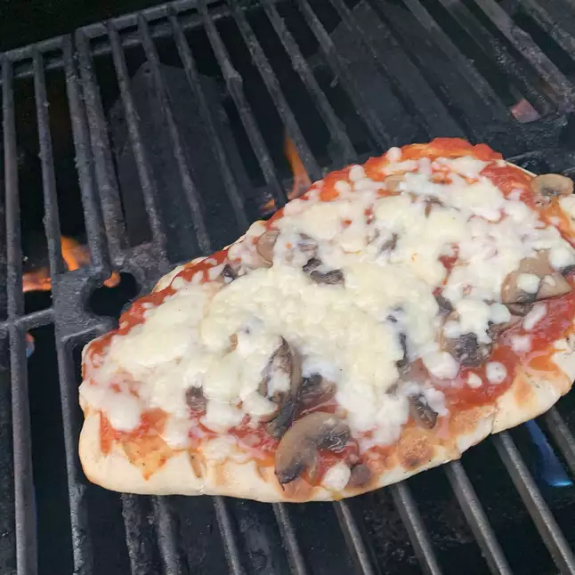

Pizza

Description
A simple dish enjoyed by people all around the world
Ingredients
- 1 cup warm water (110 degrees F/45 degrees C)
- 1 (.25 ounce) package active dry yeast
- 1 pinch white sugar
- 3⅓ cups all-purpose flour
- 1 tablespoon olive oil
- 2 teaspoons kosher salt
- 2 cloves garlic, minced
- 1 tablespoon chopped fresh basil
- ½ cup olive oil
- 1 teaspoon minced garlic
- ¼ cup tomato sauce
- 1 cup chopped tomatoes
- ¼ cup sliced black olives
- ¼ cup roasted red peppers
- 2 cups shredded mozzarella cheese
- 4 tablespoons chopped fresh basil
Steps
- Pour warm water into a large bowl; dissolve yeast and sugar in warm water. Let stand until yeast softens and begins to form a creamy foam, about 5 to 10 minutes.
- Mix in flour, 1 tablespoon olive oil, and salt until dough pulls away from the sides of the bowl. Turn onto a lightly floured surface. Knead until smooth, about 8 minutes. Place dough in a well-oiled bowl and cover with a damp cloth. Set aside to rise until doubled, about 1 hour. Punch down; knead in garlic and basil. Set aside to rise for 1 more hour, or until doubled again.
- Preheat an outdoor grill for high heat. Combine 1/2 cup olive oil with minced garlic in a microwave-safe cup or bowl. Heat for 30 seconds in the microwave; set aside.
- Punch down dough and divide in half. Form each half into an oblong shape 3/8 to 1/2 inch thick.
- Brush grill grate with garlic-flavored olive oil. Carefully place one piece of dough on the hot grill. Dough will begin to puff almost immediately. When the bottom crust has lightly browned, turn dough over using two spatulas. Working quickly, brush oil over crust, and then brush with 2 tablespoons tomato sauce. Arrange 1/2 cup chopped tomatoes, 1/8 cup sliced black olives, and 1/8 cup roasted red peppers over crust. Sprinkle with 1 cup cheese and 2 tablespoons basil. Close the lid, and cook until cheese melts. Remove from grill and set aside to cool for a few minutes. Repeat with second piece of dough.